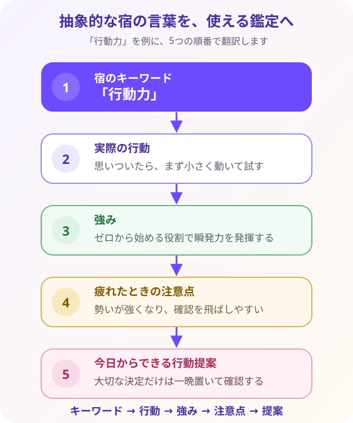

27宿を性格・才能に変換する
宿のキーワードを、恋愛・仕事・金運など具体的な場面に読み替えていきましょう。
ここでは、宿の短いキーワードを「相談者に伝わる言葉」へ翻訳します。性格だけでなく、実際の行動まで結びつけるのがポイントです。
1. 宿の言葉を「相談者に伝わる言葉」へ翻訳する
月宿傍通暦式で本命宿を求めたら、早見表に書かれた短いキーワードを読むだけで終わらせません。その言葉が、相談者の毎日の中でどんな気持ち・行動・出来事として表れやすいのかを、具体的な言葉へ置き換えます。
読み分ける主な場面は、感情パターン・行動パターン・恋愛傾向・仕事傾向・金運傾向です。同じ本命宿でも、仕事の相談と恋愛の相談では、役立つ説明が違います。今、相談者がどの場面を知りたいのかを意識して言葉を選びましょう。
例えば、宿のキーワードが「行動力」だったとします。「あなたには行動力があります」と伝えるだけでは、相談者は自分の生活でどう活かせばよいのか分かりません。そこで、場面に合わせて次のように翻訳します。
仕事の場面への翻訳
「ゼロから物事を始める役割を任されると、持ち前の瞬発力を発揮しやすい人です。準備だけを長く続けるより、小さく試しながら形にする仕事で力が出ます」と伝えます。
恋愛の場面への翻訳
「気持ちを言葉だけで説明するより、会いに行く、手伝う、予定を立てるなど、実際の行動で愛情を示そうとするタイプです」と伝えます。
金運の場面への翻訳
「良いと思ったものへ素早くお金を使える一方、勢いで決めやすい面もあります。大きな買い物だけは一晩置くと、行動力を活かしながら後悔を減らせます」と伝えます。
このように、抽象的な性質 → 日常で見える行動 → 役立つ助言へ変えることで、キーワードが相談者自身の言葉として届くようになります。
「行動力があります」で止めずに、いつ・どこで・どんな行動として出るのかまで考えます。仕事、恋愛、金運など、相談場面を1つ決めると、具体的な言葉を作りやすくなります。
2. 鑑定がスムーズになる「5つの読み順」
早見表の情報を思いついた順に並べると、相談者には話のつながりが見えにくくなります。次の5つの順番で読むと、性質の説明から具体的な助言まで、一本の流れとして伝えられます。
① 宿のキーワード
その宿を理解する入口となる、根本的な性質です。「行動力」「慎重」「調和」「信念」など、まず中心となる一言を選びます。
② 実際の行動
その性質が日常のどんな場面に表れるかを考えます。「確認してから動く」「人の間に入って話をまとめる」など、外から見える行動へ置き換えます。
③ 強み
その行動が良い方向に働いたとき、周囲や本人にどんな価値を生むかを伝えます。相談者が自分の性質を前向きに受け取れる部分です。
④ 注意点
同じ性質が強く出すぎたときや、疲れて余裕が少ないときに起きやすい反応を伝えます。人格を否定せず、「こういうときは少し注意しましょう」と扱います。
⑤ 今日からできる行動
最後に、相談者が無理なく試せる最初の一歩を提案します。「今日やることを1つに絞る」「返事の前に一晩置く」など、小さく具体的な行動にします。
キーワード：慎重 → 実際の行動：始める前に細かく確認する → 強み：見落としが少なく、丁寧で信頼される → 注意点：考えすぎて動き出せないことがある → 行動提案：最初の10分だけ試してから再確認する、という流れです。
長所と短所を別々に考えるのではなく、同じ性質の表と裏として読むと、自然で納得感のある鑑定になります。

3. 初心者でも書ける「4文鑑定公式」
鑑定文の組み立てに迷ったら、次の4文へ当てはめます。難しい言い回しを増やさなくても、傾向・強み・注意・提案がそろった、読みやすい鑑定になります。
第1文：傾向を伝える
「あなたは〇〇の傾向があります」と、宿のキーワードを日常的な言葉へ変えて伝えます。断定せず、「傾向があります」と余白を残します。
第2文：得意なことを伝える
「そのため△△が得意です」と、その性質が良い方向に働いたときの強みを伝えます。
第3文：注意点をやさしく伝える
「疲れたときは□□に気をつけましょう」と、余裕が少ないときに出やすい反応を説明します。
第4文：小さな行動を提案する
「まず◇◇を試してみてください」と、相談者が今日から選べる具体的な行動で締めます。
あなたは、新しいことへ一歩を踏み出しやすい人です。
そのため、ゼロから始める役割で力を発揮します。
疲れたときは、勢いだけで進みすぎないよう、一度立ち止まりましょう。
まずは今日やることを1つに絞ってみてください。
4. 「疲れたときの反応」を優しく伝えるコツ
鑑定で注意点を伝えるときに、「〇〇はダメです」「そこがあなたの悪いところです」と否定すると、相談者は責められたように感じてしまいます。注意点は、その人の価値を下げる材料ではありません。
本講座では、短所に見える部分を「疲れたときや、心の余裕が少ないときに出やすい自然な反応」として捉えます。強みとして使っている性質も、出すぎると負担になることがあるからです。
例えば、行動力が強みの人は、元気なときには周囲を前へ進められます。しかし疲れていると、確認を飛ばして急ぎすぎることがあります。このとき「落ち着きがない人」と決めず、「力を使い続けたため、立ち止まる時間が必要なサインかもしれません」と伝えます。
そして注意点だけで終わらず、「その性質をどう活かせばよいか」まで提案します。「大切な決定だけは一晩置く」「やることを1つに絞る」など、本人が選べる開運行動を添えましょう。
本命宿は、その人のすべてを証明するものではありません。宿の言葉と本人の実際の行動を照らし合わせ、当てはまる部分を具体例へ変えます。本人の経験と違うときは、占いの言葉より本人の実感を尊重しましょう。
早見表は、まず自分の宿だけをタップしてみましょう。「性格 → 行動 → 強み → 注意点 → 開運行動」の順に追うと、鑑定文へつなげやすいですよ。
| 宿 | 性格 | 感情 | 行動 | 恋愛 | 仕事 | 金運 | 注意点 | 開運行動 | 鑑定文例 |
|---|
大切なのは、短所を突きつけず「どう活かせるか」まで伝えることです。5問クイズで、鑑定文の組み立て方を確認しましょう。